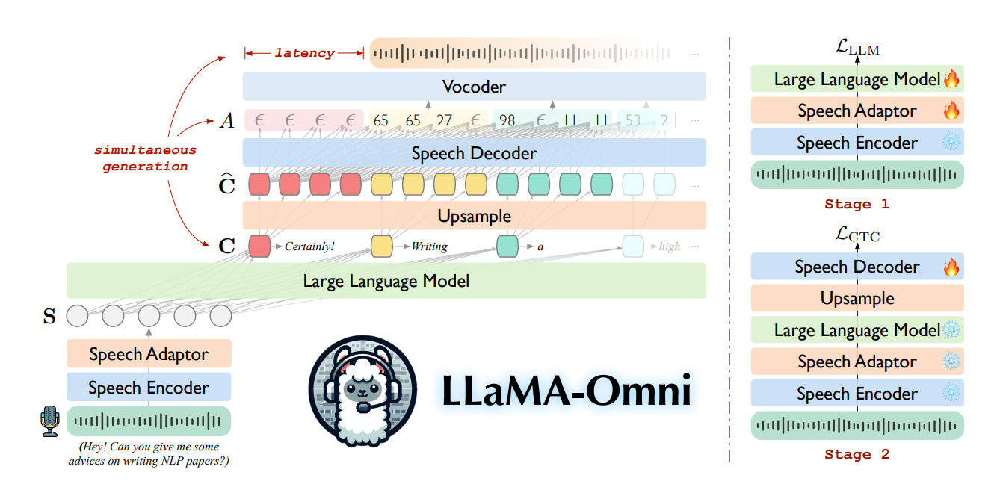

語音指令回應、翻譯嘗試與論文 §2–6
2026-10-15
模型已能接收英文語音，產生文字與語音回答。
但要求它翻譯錄音原話時，輸出並不穩定。
本次實驗依既有報告及研究者補充整理；方法說明依 Fang et al., LLaMA-Omni, arXiv v2。
| 條件 | 輸入 | 希望模型做的事 |
|---|---|---|
| C1 | 語音 | 回應錄音內容 |
| C2 | 語音 | 英文逐字轉寫 |
| C3 | 語音 | 翻譯錄音原話為繁體中文 |
| C4 | 人工文字 | 跳過語音輸入路徑，要求翻譯 |
C3 中，研究者回報 system 與 user 訊息都改為翻譯指令，並要求不要回答錄音中的問題。
三個內容 × 四個條件，共 12 筆文字輸出。完整 prompt、腳本與原始執行檔待回收核對；C3 指令設定依研究者本次補充。
A01｜語音中的問句
What are some cool music from the one thousand nine hundred and twenties?
輸出： 英文列舉 Louis Armstrong、Duke Ellington 等音樂例子。
觀察： 回答了問題，未翻譯原問句。
A02｜語音中的直述句
The meeting has been moved from Monday morning to Tuesday afternoon.
輸出：「会议已从星期一上午到星期二下半天进行。」
觀察： 嘗試中文輸出，但改期語意不準確，也不是繁體。
兩筆皆為 C3 語音條件；本頁摘要，原樣輸出見附錄。人工初判，沒有正式翻譯評分。
論文 Figure 3
system： 設定為能理解語音的助理。
user： <speech> 後明確要求回答語音中的問題。
本次 C3
system： 研究者改為要求中文翻譯、不回答問題。
user： 也一併改為翻譯指令。
這裡沒有「system 要翻譯、user 卻要回答」的指令衝突。輸出差異仍需回收實際 prompt 與腳本才能進一步分析。
論文 v2 Figure 3；本次 C3 修改依研究者補充，精確字句待原始紀錄核對。

架構圖為研究者提供的版本；模組與兩階段訓練對照論文 v2 §2 與 Figure 2。
輸入錄音 XS（波形）
↓ Whisper-large-v3 encoder
H = [h1, …, hN]（連續特徵向量）
H = E(XS), H = [h1, …, hN] ∈ ℝN × de
E：Whisper-large-v3 的語音 encoder，將輸入波形轉成連續語音特徵。
N：語音特徵的時間位置數量。 de：每個特徵向量的維度。
這裡只使用 Whisper encoder 抽取特徵，沒有先用文字 decoder 辨識逐字稿；H 仍是一串連續向量。
hi′ = h5(i − 1) + 1 ⊕ ⋯ ⊕ h5i, si = W2ReLU (W1hi′ + b1) + b2
N = 10 為示意；論文實際 k = 5。
串接讓時間位置變少、每個位置的特徵變大；MLP 再把每組特徵轉成 LLM 的輸入維度。
論文 v2 §2.2，式 (1)–(2)；Meta 模型設定。H、H′、S 都是連續向量。
zi = ReLU (W1hi′ + b1), si = W2zi + b2
兩層 MLP 提供非線性映射，且不增加跨位置 attention；「去噪」與速度優勢仍需額外實驗驗證。
論文 v2 §2.2。簡單與否是依模組結構說明，不是論文的 adaptor 消融實驗結論。
System：語音助理角色設定
User：〔語音向量 S〕＋回答指示
Assistant：開始生成回答
P(S)＋先前的回答 tokens Y < iT
↓ Llama-3.1-8B-Instruct（LLM）→ hidden state ci
├→ 文字輸出層 → yiT；加入前綴，成為下一步的輸入
└→ ci 上採樣後供 Speech decoder 預測語音 units
pi = softmax (WLMci + bLM)
P(S)：含語音向量 S 與回答指示的 prompt。 ci：根據 prompt 與先前 tokens 算出的 hidden state。
WLM, bLM：文字輸出層參數。 pi：下一個文字 token 的機率分布；yiT：選出的 token ID。
ci 預測出 yiT；yiT 加入前綴供下一步使用，而語音 decoder 接收的是 ci。
文字輸出層公式是講解用的標準表示，非論文新增模組。論文 v2 §2.3。
P(S)＋已有的回答 tokens → LLM 預測下一個 token → 與資料中的正確 token 比較
M：回答的文字 token 數。 yiT：第 i 個正確 token。
Y < iT：第 i 步之前的回答 tokens。 P(yiT ∣ P(S), Y < iT)：在已有輸入下預測正確 token 的機率。
訓練時讓正確 token 的機率提高；每一步機率越低，負對數 loss 越大。
資料中的回答錄音 YS（波形）
↓ HuBERT → 連續語音特徵
↓ K-means，K = 1000 → [65, 65, 27, 27, 98]
↓ 合併連續相同 IDs → YU = [65, 27, 98]
YU = [y1U, …, yLU], yjU ∈ {0, …, 999}
數字序列為示意。
訓練時由回答錄音製作目標；推論時由 speech decoder 預測 units，不需要回答錄音。
論文 v2 §2.4。YU 是離散 IDs，YS 是波形。
C = [c1, c2] → 重複每個向量 → Ĉ = [c1, c1, c1, c2, c2, c2]
↓ Speech decoder ＋ 分類層
A* = [65, 65, ε, 27, 27, 98] → CTC collapse → YU = [65, 27, 98] → Vocoder → 回答聲音
O = D(Ĉ), P(ai ∣ O) = softmax (Woi + b)[ai]
ℒCTC = −log ∑A : β(A) = YUP(A ∣ O)
λ = 3 與 ID 序列為示意；論文實際 λ = 25。分類：1000 種 units＋blank。
把所有能折疊成正確 unit 序列的對齊路徑機率加總；多出的預測位置允許 blank 與重複。
論文 v2 §2.4。Hidden states 先上採樣，再送入 speech decoder 預測 units／blank。
| 階段 | 更新參數 | 凍結模組 | Loss |
|---|---|---|---|
| Stage 1 | Adaptor、LLM | Encoder | ℒLLM |
| Stage 2 | Speech decoder | Encoder、Adaptor、LLM | ℒCTC |
Stage 1 Encoder → Adaptor → LLM → 文字 loss ⇠ 梯度回傳至 Adaptor、LLM
Stage 2 Encoder → Adaptor → LLM → Speech decoder → CTC loss ⇠ 梯度只更新 decoder
第一階段學習根據語音生成文字回答；第二階段固定前面的表示，學習生成對應語音。
論文 v2 §2.5。灰色＝凍結；橘色＝更新；虛線意指梯度傳遞。
|YU|−j ≥ Ω
|YU|：目前累積產生的 unit 數。 j：已送去合成的 unit 數。 Ω：觸發合成的最小新增 unit 數。
| 更新時點 | 尚未送去合成的 units | 動作 |
|---|---|---|
| 第一次 | [65, 27] |
繼續累積 |
| 第二次 | [65, 27, 98, 11, 53] |
合成並播放這 5 個 units |
| 第三次 | [2, 8] |
繼續累積 |
| 回答結束 | 剩餘 [2, 8] |
合成並播放剩餘部分 |
Causal attention 讓 decoder 根據已有前綴產生 units；chunk 門檻決定何時合成並播放。Ω 不保證每段恰好只有 Ω 個 units。
Ω = 4 為示意。論文 v2 §2.6 與 Algorithm 1。這裡的 streaming 指輸出語音逐段生成；本輪未測輸入串流、端到端延遲或即時翻譯。
先有文字指令，再產生「語音指令、文字回答、語音回答」三元組。
| 步驟 | 處理 | 得到的資料 |
|---|---|---|
| 1 指令重寫 | Llama-3-70B-Instruct 加入口語詞、改寫數字並縮短問題 | 適合說出口的文字指令 |
| 2 回答生成 | 同一 70B 模型避免序號、括號與冗長回答 | 精簡的文字回答 |
| 3 語音合成 | CosyVoice-300M-SFT 合成指令；LJSpeech VITS 合成回答 | 輸入與回答錄音 |
這 20 萬筆資料是從文字指令出發，經改寫和 TTS 合成的語音互動資料。
論文 v2 §3。上表描述資料建構流程，不代表真實雙人對話錄音。
| 來源 | 筆數 | 使用方式 |
|---|---|---|
| Alpaca | 約 5 萬 | 擷取文字指令 |
| UltraChat | 約 15 萬 | 只使用第一輪指令 |
| 合計 | 約 20 萬 | 建立 InstructS2S-200K |
輸入語音 418 小時，平均 7.5 秒
回答語音 1058 小時，平均 19.0 秒
指令端隨機使用 CosyVoice 的男性或女性聲線；回答端由 LJSpeech VITS 合成單一標準聲線。
| 項目 | 論文設定 |
|---|---|
| 基底模型 | Llama-3.1-8B-Instruct |
| 訓練 | 兩階段，共約 65 小時；4 張 NVIDIA L40 GPU |
| 測試集 | 199 段語音指令；來自 Alpaca-Eval，移除數學與程式題 |
| 回答評分 | GPT-4o 給 1–5 分，綜合幫助性、相關性、流暢度與口語適配度 |
| 延遲量測 | 單張 NVIDIA L40 GPU；量測到語音回答開始的時間 |
65 小時是作者報告的訓練時間；接下來的分數與延遲也都是論文實驗，並非本次三段音訊的測量。
| 模型 | S2TIF 分數 | S2SIF 分數 | ASR-WER ↓ |
|---|---|---|---|
| SpeechGPT | 2.98 | 2.19 | 45.00 |
| SALMONN + Orca | 3.44 | 3.40 | 3.78 |
| Qwen2-Audio + Orca | 3.47 | 3.38 | 6.77 |
| LLaMA-Omni | 3.99 | 3.47 | 10.82 |
LLaMA-Omni 的 GPT-4o 回答評分最高；但語音與文字的一致性指標 ASR-WER 仍落後兩個串接式系統。
S2TIF＝語音輸入、文字回答；S2SIF＝語音輸入、語音回答。評分範圍 1–5；ASR-WER 越低越好。論文 v2 §4.4，Table 2。
| 最小 unit 門檻 Ω | 開始播放延遲 | GPT-4o 分數 | UTMOS 自然度 |
|---|---|---|---|
| 10 | 236.18 ms | 3.54 | 3.2304 |
| 40 | 346.73 ms | 3.52 | 3.6688 |
| 100 | 562.81 ms | 3.49 | 3.8242 |
| 離線 | 1753.77 ms | 3.47 | 3.9296 |
Ω 較小會更早播放，但切段較多，這組實驗中的 UTMOS 較低；提高門檻可換取較連續的語音。
論文在單張 L40 GPU 上量測；236.18 ms 為 Ω = 10 的結果。論文 v2 §4.5、Appendix C Table 4。
| 路線 | 做法 | 論文指出的取捨 |
|---|---|---|
| 語音 token 納入 LLM 詞表 | SpeechGPT、AudioPaLM 等延續預訓練 | 往往需要大量資料與算力 |
| 語音 encoder 接 LLM | 將聲音表示送進 LLM | 多數著重理解，輸出主要是文字 |
| LLaMA-Omni | Encoder＋Adaptor＋LLM＋Speech decoder | 同時生成文字與回答語音 |
本文的定位是以既有開源 LLM 為核心，加入語音輸入與輸出能力；實驗沒有展示邊聽使用者說話邊回應的全雙工對話。
| 方法類型 | 如何處理等待與對齊 |
|---|---|
| Monotonic attention | 透過單調對齊和 READ/WRITE 策略控制何時輸出 |
| CTC | 以 blank 與重複預測表示等待及可折疊的對齊 |
| Transducer | 額外的 predictor 建模輸出 token 之間的依賴 |
LLaMA-Omni 以 CTC 學習文字 hidden states 到語音 units 的對齊；非自回歸 decoder 產生部分 units，再按門檻分段合成。
論文 v2 §2.4、§2.6、§5。這是作者採用的設計，論文未逐一與三類方法做受控比較。
20 萬筆合成語音互動資料支撐文字與語音同步生成。
論文驗證了輸出端串流；即時打斷、全雙工對話和輸入語音串流仍需另行驗證。
論文 v2 §6；延遲數值見Appendix C Table 4。
修改 system 與 user 為翻譯指令後，
這三段語音仍未穩定得到忠實的繁體中文翻譯。
本輪是三段便利樣本的初步觀察；沒有正式評分、微調、串流輸入或延遲測量。完整 12 筆輸出見附錄。
A01-C1｜語音回應
Some cool music from the one thousand nine hundred and twenties includes jazz legends like Louis Armstrong and Duke Ellington, as well as popular songs from the Roaring Twenties like ‘The Charleston’ and ‘Five Foot Two, Eyes of Blue’.
A01-C2｜英文逐字轉寫要求
Some cool music from the one thousand nine hundred and twenties includes jazz legends like Louis Armstrong and Duke Ellington, as well as popular songs like ‘The Charleston’ and ‘Five Foot Two, Eyes of Blue’.
使用者提供的 prediction 原樣保留；A01-C2 仍回答問題，未逐字轉寫。原始整理
A01-C3｜語音翻譯要求；system、user 均改為翻譯指令
Some cool music from the one thousand nine hundred and twenties includes jazz legends like Louis Armstrong and Duke Ellington, as well as popular songs like ‘The Charleston’ and ‘Five Foot Two, Eyes of Blue’.
A01-C4｜人工文字翻譯對照
What are some cool music from the one thousand nine hundred and twenties?
C3 的指令設定依研究者補充；輸出依原始整理原樣保留。
A02-C1｜語音回應
The meeting has been rescheduled to Tuesday afternoon.
A02-C2｜英文逐字轉寫要求
The meeting has been moved from Monday morning to Tuesday afternoon.
A02-C3｜語音翻譯要求
会议已从星期一上午到星期二下半天进行。
A02-C4｜人工文字翻譯對照
會議已從星期一上午改到星期二下午。
使用者提供的 prediction 原樣保留；判讀與限制見原始整理。
A03-C1｜語音回應
You can make a fruit salad with your apples and bananas, or try making a smoothie by blending them together with some yogurt or milk.
A03-C2｜英文逐字轉寫要求
You can make a fruit salad or a smoothie with your apples and bananas without cooking.
A03 精確原話與最終音檔待核對；不能將模型輸出當成人工逐字稿。原始整理
A03-C3｜語音翻譯要求
You can make a fruit salad or a smoothie with your apples and bananas without cooking.
A03-C4｜人工文字翻譯對照
What kind of snack can you make with apples and bananas at home without cooking?
使用者提供的 prediction 原樣保留；兩筆皆未輸出繁體中文翻譯。原始整理
A01-C4-system｜人工文字輸入，另改 system prompt
一九二零年代的cool音乐包括Jazz、Blues和Swing音乐。
它仍在列舉音樂類型，沒有將原本的疑問句忠實翻成繁體中文；這筆不屬於主要 12 筆語音／文字條件表。
本次輸出依原始整理保留；C4 是人工文字輸入，不應用來證明語音條件的結果。